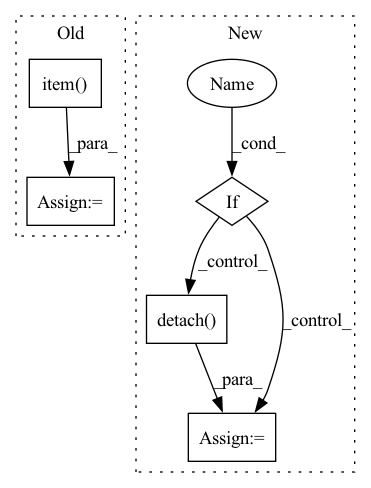

Pattern ID :16965

Before Change
loss = 1 - mse_loss / torch.var(x)
out = {}
out["pVar"] = loss.detach().item()
out["W"] = ws_layer.forward_weights.detach().cpu().numpy()
out["mu"] = ws_layer.mu.detach().numpy()
out["r"] = ws_layer.r.detach().numpy()
out["W0"] = W0
After Change
mu0 = ws_layer.mu.clone()
r0 = ws_layer.r.clone()
tau0 = ws_layer.tau.clone()
if ws_layer.force_dale_law:
ratio_sign_0 = (np.mean(torch.sign(ws_layer.forward_sign).detach().cpu().numpy()) + 1)/2
else:
ratio_sign_0 = (np.mean(torch.sign(ws_layer.forward_weights).detach().cpu().numpy()) + 1)/2
print(f"ratio exec init: {ratio_sign_0 :.3f}")
dataset = WSDataset(true_time_series.T)
In pattern: SUPERPATTERN
Frequency: 3
Non-data size: 5
Instances
Fragment ID: 56998804
Project Name: neurotorch/neurotorch
Commit Name: a19976d80f57c54d66a936925f12b6f25f452bb8
Time: 2022-09-28
Author: 50332514+JeremieGince@users.noreply.github.com
File Name: tutorials/time_series_forecasting_wilson_cowan/main_dale.py
M Class Name: AnonimousClass
N Class Name: AnonimousClass
M Method Name: train_with_params(20)
N Method Name: train_with_params(20)
M Parent Class:
N Parent Class:
M File Name: tutorials/time_series_forecasting_wilson_cowan/main_dale.py
N File Name: tutorials/time_series_forecasting_wilson_cowan/main_dale.py
M Start Line: 45
M End Line: 152
N Start Line: 51
N End Line: 168
'>
Before Change
if self.max_norm:
nn.utils.clip_grad_norm_(self.model.parameters(), self.max_norm)
train_loss += loss.item()
if (idx + 1) % 100 == 0:
s = "[Epoch {}/{}] iter {}/{} loss:".format(epoch + 1, self.epochs, idx + 1, n_train_batch)
s += " {:.5f}".format(loss.item())
After Change
if self.max_norm:
nn.utils.clip_grad_norm_(self.model.parameters(), self.max_norm)
if self.combination:
train_loss += mean_loss.item()
else:
train_loss += mean_loss.detach()
if (idx + 1) % 100 == 0:
s = "[Epoch {}/{}] iter {}/{} loss:".format(epoch + 1, self.epochs, idx + 1, n_train_batch)
if self.combination:
'>
Fragment ID: 56998803
Project Name: tky823/dnn-based_source_separation
Commit Name: 84cad5184ccab316e3675dc3f6c07c11e5d09277
Time: 2021-10-29
Author: delta9guitar97@gmail.com
File Name: egs/musdb18/x-umx/src/adhoc_driver.py
M Class Name: AdhocSchedulerTrainer
N Class Name: AdhocSchedulerTrainer
M Method Name: run_one_epoch_train(2)
N Method Name: run_one_epoch_train(2)
M Parent Class: TrainerBase
N Parent Class: TrainerBase
M File Name: egs/musdb18/x-umx/src/adhoc_driver.py
N File Name: egs/musdb18/x-umx/src/adhoc_driver.py
M Start Line: 120
M End Line: 148
N Start Line: 139
N End Line: 182
'>
Before Change
loss = loss.view(batch_size, n_sources)
loss = loss.mean()
valid_loss += loss.item()
estimated_sources_amplitude = estimated_sources_amplitude.view(batch_size, n_sources, n_mics, n_bins, n_frames)
mixture = mixture.permute(1, 2, 3, 0, 4) // (1, n_mics, n_bins, batch_size, n_frames)
estimated_sources_amplitude = estimated_sources_amplitude.permute(1, 2, 3, 0, 4) // (n_sources, n_mics, n_bins, batch_size, n_frames)
After Change
loss = self.criterion(estimated_sources_amplitude, sources, batch_mean=False)
if self.combination:
valid_loss += loss.mean(dim=0).item()
else:
valid_loss += loss.mean(dim=0).detach() // (n_sources,)
batch_size, n_sources, n_mics, n_bins, n_frames = estimated_sources_amplitude.size()
'>
Fragment ID: 56998802
Project Name: tky823/dnn-based_source_separation
Commit Name: 84cad5184ccab316e3675dc3f6c07c11e5d09277
Time: 2021-10-29
Author: delta9guitar97@gmail.com
File Name: egs/musdb18/x-umx/src/adhoc_driver.py
M Class Name: AdhocSchedulerTrainer
N Class Name: AdhocSchedulerTrainer
M Method Name: run_one_epoch_eval(2)
N Method Name: run_one_epoch_eval(2)
M Parent Class: TrainerBase
N Parent Class: TrainerBase
M File Name: egs/musdb18/x-umx/src/adhoc_driver.py
N File Name: egs/musdb18/x-umx/src/adhoc_driver.py
M Start Line: 163
M End Line: 189
N Start Line: 195
N End Line: 220